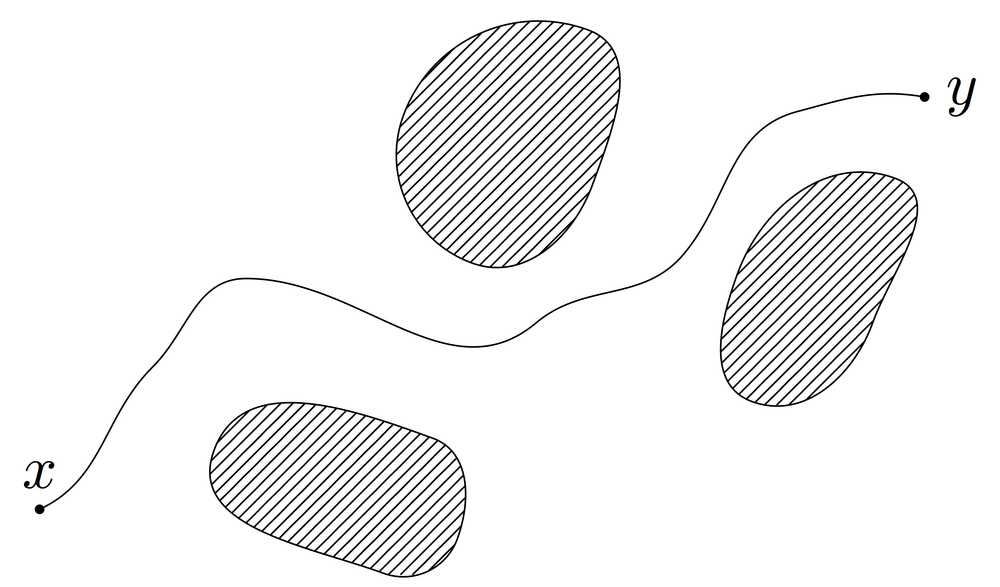
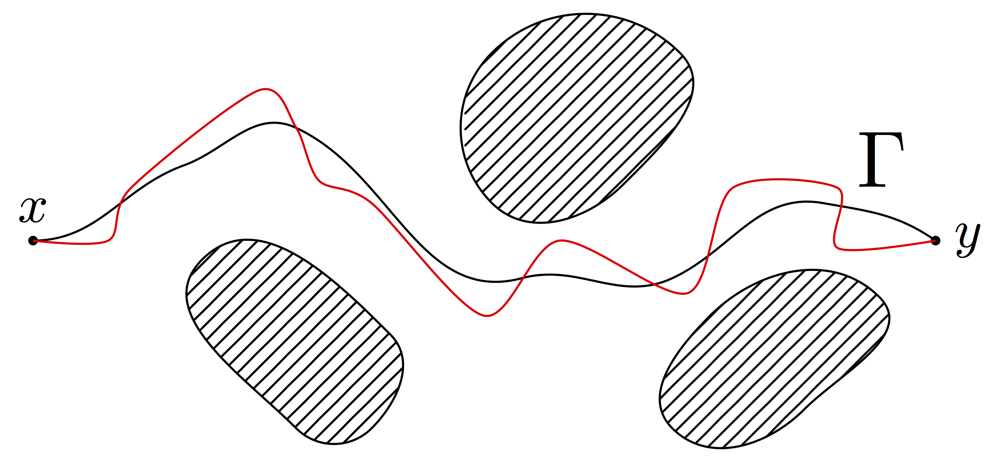
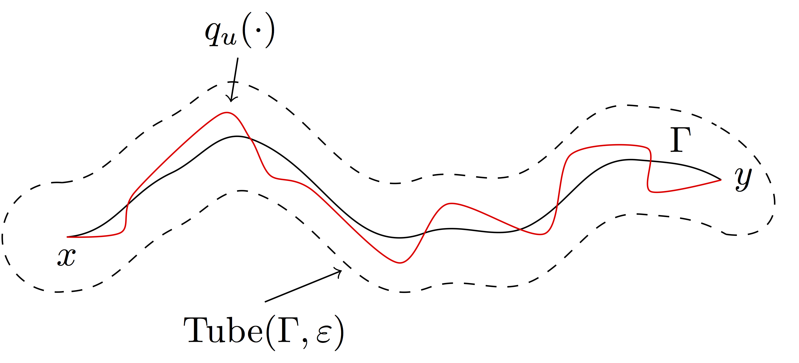
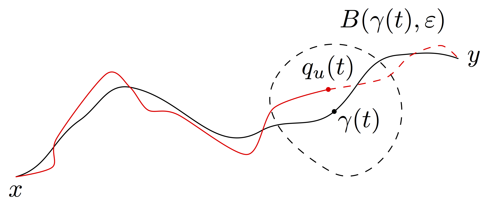
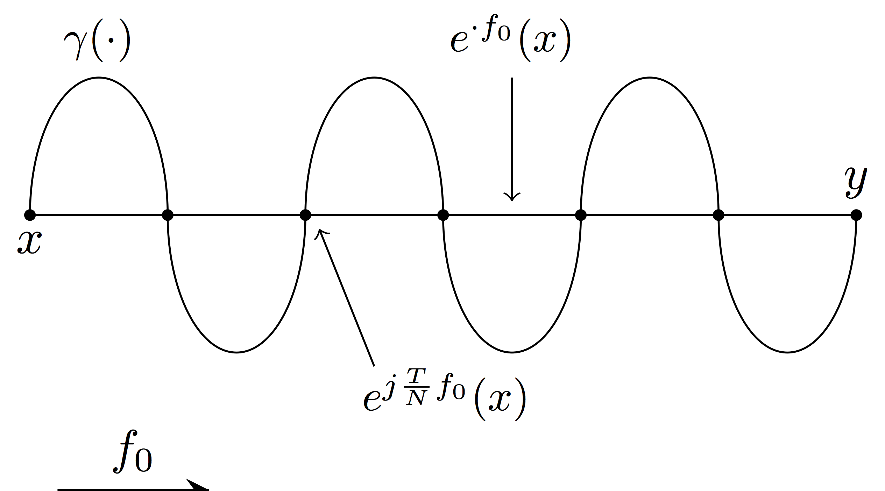
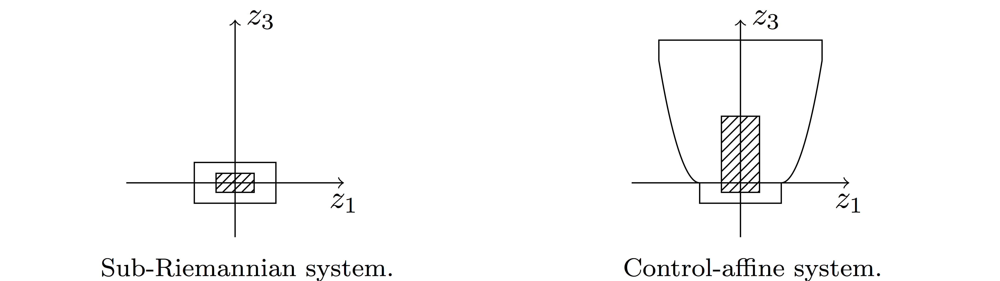

Complexity in an affine control system
Here are the notes for the seminar I gave today at the Séminaire de Théorie du Contrôle de Toulon.
This is a joint work with F. Jean, and is currently under review. You can find the preprint here.
Table of Contents
General Framework
In this talk we will consider control-affine systems. Namely, we will be interested in \[ \dot q = f_0(q)+\sum_{j=1}^m u_j f_j(q) \] where:
- \(q\) is a point on a smooth manifold
- \(f_0,f_1,\ldots,f_m\) are smooth vector fields
- \(f_1,\ldots,f_m\) are the control vector fields
- \(f_0\) is the drift
- \(u\) is an integrable control defined on \([0,T]\)
These systems have a lot of applications, just to cite a few we recall:
- mechanical systems
- quantum control
- micro-swimmers
- neuro-geometry of vision
Motion Planning problem

Given a control system, the first problem one faces is the motion planning problem:
Given \(x,y\in M\) devise a strategy (find a control) to steer the system from \(x\) to \(y\) subject to certain constraints.
Constraints can be of two types:
- static
- they do not depend on time, like to avoid some obstacles
- time-critical
- they depend on time, like to avoid moving obstacles or the so-called rendez-vous problems1
Method
A lot of methods exists to solve the motion planning problem.
We consider a two step method:
- Find a (non-admissible) curve or path solving the problem
- Track it by means of an admissible trajectory (that keeps satisfying the constraints)

Few remarks:
- We will look for a curve in the case of static problems and for a path in the case of time-critical problems
- This method is extremely modularized, indeed:
- Depends only on the global topology of the manifold and on the constraints. It does not depend on the control system.
- Depends only on the local nature of the control system.
We will thus focus on solving the second step.
Complexities in general control systems
Complexity: measure of the "difficulty" of tracking a given curve/path at a certain precision.
Heuristically, the complexity of a curve \(\Gamma\) at precision \(\epsilon\) is defined as the ratio \[ \sigma(\Gamma,\epsilon) = \frac{\textrm{cost of tracking }\Gamma\textrm{ at precision }\epsilon}{\textrm{cost of an elementary }\epsilon\textrm{ piece}} \]
To give a meaning to such ratio we have to choose:
- a cost function \(J:\mathcal U \to [0,+\infty)\). Here we let \(\mathcal U\) to be the set of integrable controls defined with maximum time less than \(\mathcal T\);
- a set of controls that track Γ at precision ε, that we will call Adm(Γ,ε).
Once we have done that, we can precisely define \[ \sigma(\Gamma,\epsilon)= \frac{1}{\epsilon} \inf_{u \in\textrm{Adm}(\Gamma,\epsilon)} J(u,T). \]
Here we will treat only 2 complexities.
Assumption
From now on we will assume that a metric is fixed on \(M\), with balls \(B(q,r)\). This is not necessary to define complexity (in the paper you can find 2 different definitions based on interpolation which do not require a metric) but is done for the sake of clarity.
In general such metric is completely independent of the control system. Later we will however consider a "natural" metric associated to our control systems.
Static problems: obstacle avoidance

In this case, we know that the given curve \(\Gamma\subset M\) stays away from the obstacles. So, to be sure not to touch them, it is enough to stay inside a tubular neighborhood of sufficiently small radius. Thus we will let \[ \mathcal A(\Gamma,\epsilon) = \{ u\in L^1([0,T])^m \mid T>0, q_u(T) = y, q_u([0,T])\subset \textrm{Tube}(\Gamma,\epsilon) \}. \]
The tubular approximation complexity is then defined as \[ \Sigma(\Gamma,\epsilon) = \frac{1}{\epsilon} \inf_{u\in\mathcal A(\Gamma,\epsilon)} J(u,T) \]
Time-critical problems: rendez-vous problem

Here, we are given a path \(\gamma[0,T]\to M\). To be sure that at time \(t\) we are near the point \(\gamma(t)\), we consider the following set of admissible controls: \[ \mathcal N(\Gamma,\epsilon) = \{ u\in L^1([0,T])^m \mid q_u(T) = y, q_u(\cdot)\in B(\gamma(\cdot),\epsilon) \}. \]
The neighborhing approximation complexity is then defined as \[ \sigma(\gamma,\epsilon) = \frac{1}{\epsilon} \inf_{u\in\mathcal N(\gamma,\epsilon)} J(u,T) \]
Attention: here the time \(T>0\) is fixed.
Remark
Observe that \(\mathcal N(\gamma,\epsilon) \subset \mathcal A(\Gamma,\epsilon)\), i.e., each control admissible for the neighboring complexity of \(\gamma\) is also admissible for the tubular approximation complexity of \(\Gamma = \gamma([0,T])\). Thus, it is always true that \(\sigma(\gamma,\epsilon) \ge \Sigma(\Gamma,\epsilon)\).
A particular case: SR geometry
Complexities have been extensively studied in the sub-Riemannian context.
Sub-riemannian geometry is the geometry underlying driftless control-affine optimal control problems. Namely, we consider the following control system,
\[ \dot q = \sum_{j=1}^m u_j f_j(q) \]
We let \(\Delta(q) = \textrm{span}\{f_1(q),\ldots,f_m(q) \}\) be the distribution. Then \(\Delta^k(q) = \Delta^{k-1}(q)+[\Delta,\Delta^{k-1}](q)\) is the span of the brackets of the control vector fields of length at most \(k\).
We are interested in measuring the length of trajectories, thus we will consider the \(L^1\)-norm as a cost: \[ J(u,T) = \int_0^T \sqrt{\sum_{j=1}^m u_j(t)^2}\,dt. \]
Assumptions
- Hörmander cond.
- \(\Delta(q)\subset \Delta^2(q) \subset \ldots \subset \Delta^r(q) = T_qM\) for some \(r=r(q)\). This is equivalent to say that the Lie algebra generated by the control vector fields spans the whole tangent space.
- Equiregularity
- the dimensions of the spaces \(\Delta^s(q)\) do not depend on the point. In particular neither does \(r\).
Properties
- By Chow theorem, thanks to the Hörmander condition the value function associated with the L1 cost is always finite (i.e., every pair of point on \(M\) is joined by at least one admissible trajectry) and is indeed a distance (sub-Riemannian distance).
- Thanks to the rescaling properties of the L1 cost and the linearity of the system, given a trajectory we can always reparametrize it on a different time-scale without changing its cost. Namely, if \(u(\cdot)\) is a control defined on \([0,T]\) and with associated trajectory \(\gamma(\cdot)\), the control \(u_s(\cdot) = \frac{s}{T} u(\frac{T}{s}\cdot)\), defined on \([0,s]\), has the same cost and the same associated trajectory.
Sub-Riemannian complexity
Since the control system yields in a natural way a metric, we will use such metric to measure the complexity.
By the second property above, static and time-critical problems are the same from the point of view of SR geometry. Namely \(\mathcal N(\gamma,\epsilon) = \mathcal A(\gamma([0,T]),\epsilon)\) and hence \[ \Sigma(\gamma([0,T]),\epsilon) = \sigma(\gamma,\epsilon) \] Indeed the complexity of a curve is a geometric property that is related to the Hausdorff dimension of the curve.
Some historical facts:
- Introduced by Gromov (1996), in a different setting. He was interested in approximating sets by points.
- Jean (2003) studied the weak equivalence (for general non-equiregular systems):
\[ \sigma(\Gamma,\epsilon) \asymp g(\Gamma,\epsilon) \iff C_1 \le \frac{\sigma(\Gamma,\epsilon)}{g(\Gamma,\epsilon)} \le C_2 \textrm{ as }\epsilon\downarrow 0. \]
- Gauthier, Zakalyukin et al. (from 2004) strong equivalence:
\[ \sigma(\Gamma,\epsilon) \asymp g(\Gamma,\epsilon) \iff \frac{\sigma(\Gamma,\epsilon)}{g(\Gamma,\epsilon)} \rightarrow 1 \textrm{ as }\epsilon\downarrow 0. \]
Indeed, we will focus on weak asymptotics estimates. The main result in this respect for equiregular2 sub-Riemannian manifolds is the following, by Jean.
Let \(\Gamma\subset M\) be a curve such that \(T\Gamma\subset\Delta^{k}\) and \(T\Gamma\not\subset\Delta^{k-1}\). Then, \[ \Sigma(\Gamma,\epsilon) \asymp \frac{1}{\epsilon^k}. \]
Control-affine systems
We now consider control-affine systems \[ \dot q = f_0(q)+\sum_{j=1}^m u_j\,f_{j}(q) \]
We will still denote with \(\Delta^k\) the elements of the flag defined by the associated drifless system.
Assumptions
- strong Hörmander
- the Lie algebra generated by the control vector fields spans the whole tangent space. We do not need the drift.
- equiregularity
- the dimensions of the spaces \(\Delta^s(q)\) do not depend on the point.
- cost
- as before, we consider as a cost the \(L^1\) norm.
- admissible controls
- we consider integrable controls defined on time less than \(\mathcal T\).
Properties
- The associated driftless (\(f_0\equiv 0\)) system is sub-Riemannian.
- Thanks to the strong Hörmander condition, we have small time local controllability 3.
- It is always possible to move in the direction of the drift for free.
- Due to the non-linearity in the control, reparametrizing the controls yield different trajectories (contrarily to the sub-Riemannian case) and hence the complexities will behave differently. However, letting \(\gamma_s\) be the trajectory of a control \(u\) reparametrized on \([0,s]\) it holds, in a precise sense, that \(\gamma_s\longrightarrow \gamma\) as \(s\downarrow0\), where \(\gamma\) is the sub-Riemannian trajectory associated with \(u\).
Complexities
- As a metric we will use the sub-Riemannian metric of the associated driftless system. This is a rather natural choice.
- Since we cannot reparametrize the trajectories, \(\sigma(\gamma,\epsilon) \neq \Sigma(\Gamma,\epsilon)\).
So, our main result is the following,
Theorem. Let \(f_0\subset\Delta^s\setminus \Delta^{s-1}\).
- \(\Gamma\subset M\) such that, for some \(k\), \(T\Gamma\subset \Delta^{k}\) and \(T\Gamma\not\subset \Delta^{k-1}\). Then, for sufficiently small \(\mathcal T\), we have
\[ \Sigma(\Gamma,\epsilon) \asymp \frac{1}{\epsilon^k}. \]
- \(\gamma:[0,T]\to M\) such that, for some \(k\), \(\dot\gamma\in\Delta^k\) and \(\dot\gamma\not\in\Delta^{k-1}\). If, moreover, \(s=k\), we assume that \(\dot\gamma\neq f_0(\gamma) \textrm{mod} \Delta^{s-1}(\gamma)\). Then,
\[ \sigma(\gamma,\epsilon) \asymp \frac{1}{\epsilon^{\max\{s,k\}}}. \]
Remarks:
- The complexity of curves is not sensible to the drift
- The complexity of paths is sensible to the drift. In particular, when \(f_0\subset\Delta^r\setminus\Delta^{r-1}\) where \(r\) is such that \(\Delta^r = T_q M\), the complexity is always maximal, i.e., \(\sigma(\gamma,\epsilon)\asymp \epsilon^{-r}\).
- The bound on the maximal time of definition of the controls is essential to localize the problem. Moreover, without it the global relation between the drift and the curve (that we cannot control) could play an important role. For example, in the case of complexities built on interpolation, we could have the following problem.

Techniques
SR setting
The essential ingredients for the proof in the sub-Riemannian case are
- Ball-box theorem
- It allows us to estimate how far can we get with a control of cost ε
- uniformity
- we need a ball-box theorem with uniform constants (guaranteed by the equiregularity, in our case).
- no metric cusps
- we will need the points of the curve to be well behaved.
Ball-box Theorem
A system of privileged coordinates is a system of coordinates \((z_1,\ldots,z_n)\) on \(M\) with associated weights \((w_1,\ldots,w_n)\) such that \(\partial_{z_i}\in\Delta^{w_i}\setminus\Delta^{w_i-1}\).
Ball-box theorem. In any system of privileged coordinates centered at \(q\), for ε sufficiently small it holds \[ \textrm{Box}(C_1 \epsilon)\subset B(q,\epsilon)\subset \textrm{Box}(C_2 \epsilon). \] Here, \[ \textrm{Box}(\epsilon) = \{z \in\mathbb R^n \mid |z_i|\le \epsilon^{w_i} \}. \]
Uniformity
Due to the equiregularity of the distribution, the Ball-box theorem holds uniformily on compact sets. This means that for any compact \(K\subset M\) it is possible to find a continuous family of coordinates \(\{z^{p}\}_{p\in K}\) and \(\epsilon_{K},\, C_{K}>0\) such that \(z^{p}\) is a privileged system of coordinates at \(p\in K\) and for any \(\eps<\eps_{K}\) the ball-box theorem holds with constant \(C_{K}\) at each point \(p\in K\).
Once one has uniformity of the ball-box it is quite easy, at least heuristically, to estimate the complexity of curves such that \(T\Gamma\subset \Delta^k\setminus\Delta^{k-1}\). Namely, without being precise, one can rectify the curve with respect to some family of privileged coordinates, i.e., $Γ=\{ t∂zα\mid t∈[0,T] \} for some \(T>0\) and \(\alpha\) such that \(w_{\alpha}=k\). Then, by the ball-box theorem, we know that with cost \(\eps\) it is possible to advance in the direction \(z_{\alpha}\) of \(\eps^{k}\). Since to cover the curve we need \(T/\epsilon^k\) of such pieces, we obtain that \[ \Sigma(\Gamma,\epsilon) \le \epsilon \frac{T}{\epsilon^k} \times \frac{1}{\eps} = \frac{T}{\epsilon^k}. \] In particular this estimate holds whenever \(T\Gamma\subset\Delta^k\). In a similar way one can obtain also the \(\ge\), that however holds only when \(T\Gamma\subset \Delta^k\setminus\Delta^{k-1}\).
Absence of metric cusps
A metric cusp \(q_0\) for a curve \(\Gamma\) is a point that is difficult to attain. Precisely, for each \(c,\eta>0\) there exists two points \(q_1\) and \(q_2\) on \(\Gamma\) such that \(q_0\) is between them and \(d(q_1,q_2)\le \eta\) but \(d(q_1,q_0)>c\eta\).
When we consider a sub-curve \(\Gamma' \subset\Gamma\) it is possible that one of its end-points be a metric curve. This fact is the only obstacle for the following essential inequality to be true \[ \Sigma(\Gamma,\epsilon) \succcurlyeq \Sigma(\Gamma',\epsilon), \qquad \textrm{whenever } \Gamma' \subset\Gamma. \] This is necessary to pass from the previous estimate valid for \(T\Gamma\subset \Delta^k\setminus\Delta^{k-1}\) to the final result for \(T\Gamma\subset \Delta^k\) and \(T\Gamma\not\subset\Delta^{k-1}\). Indeed, in the second case, it is always possible to find \(\Gamma' \subset\Gamma\) such that \(T\Gamma' \subset \Delta^k\setminus\Delta^{k-1}\).
Luckily, the equiregularity guarantees also that any curve is cusp-free.
Control-affine setting
In the control-affine setting we procedeed following the same scheme.
Ball-box theorem
First of all we had to develop a tool resembling the ball-box theorem, which is contained in this paper.
Theorem. In any system of privileged coordinates (for the sub-Riemannian system) centered at \(q\) and such that \(\partial_{z_\ell} = z_{*}f_0\), for sufficiently small maximal time of definition of the controls \(\mathcal T\), it holds \[ \Xi(C_1 \epsilon)\subset B(q,\epsilon) \subset \Pi(C_2\epsilon). \] Here, \[ \Xi(\epsilon) = \bigcup_{0\le \xi \le \mathcal T} \left( \xi\partial_{z_{\ell}} + \textrm{Box}(\epsilon) \right) \]
\begin{multline*} \Pi(\epsilon) = \textrm{Box}(\epsilon) \cup \bigcup_{0<\xi\le T}\{ z\in\mathbb R^n \mid 0\le z_{\ell}-\xi\le \epsilon^s, |z_i|\le \epsilon^{w_i}+\epsilon \xi^{\frac{w_i}{s}} \textrm{ for } w_i\le s,\,i\neq\ell,\\ \textrm{and }|z_i|\le \epsilon(\epsilon+\xi^{\frac{1}{s}})^{w_i-1} \textrm{ for } w_i>s \}. \end{multline*}

Figure 1: The different shapes of the boxes in the sub-Riemannian and in the control-affine cases. Here we are considering a control-affine system on \(\mathbb R^3\) with 2 control vector fields and a linear independent drift (e.g., the Heisenberg group with a vertical drift).
By the rescaling properties of the \(L^1\) norm we can consider controls defined on smaller and smaller times. Thus, their trajectories will approach the sub-Riemannian ones and we get \[ V(q_1,q_2) \le d_{\textrm{SR}}(q_1,q_2). \] This gives us an estimate from the inside of the shape of the reacheable set.
From the outside we need to work more. Since we will adapt sub-Riemannian techniques, we have to assume that \(f_0\in \Delta^s\setminus\Delta^{s-1}\) for some \(s\) (regularity of the drift with respect to the sub-Riemannian associated system). Indeed, \[ e^{t f_{0} - \epsilon f_1} \circ e^{t f_0 + \epsilon f_1}(q) \sim q + 2t f_0(q)+\epsilon t [f_0,f_1](q)+... \] So, in time \(t\), we can move in the direction \([f_0,f_1]\) by \(\epsilon t\) paying only \(2\epsilon\). In principle, if we have enough time, this would allow us to move in a direction lying in \(\Delta^{s+1}\) with a linear cost (while in the sub-Riemannian case this would cost \(\epsilon^{s+1}\))
To obtain our result, we then proceeded in the following way:
- Reduction of the control-affine system to a linear but time-dependent one, \[\dot q = \sum_{j=1}^m u_j (e^{-t f_0})_{*} f_j(q).\]
- Generalization of the concept of nilpotent approximation to this kind of systems (homogeneous series approximation).
- Estimation of the shape of the ball for the homogeneous series approximation system.
Uniformity & absence of metric cusps
These two facts are satisfied thanks to the equiregularity and to the fact that \(f_0\in\Delta^s\setminus\Delta^{s-1}\). Indeed, for metric cusps, this only proves that they are isolated points on Γ: they can still appear whenever the drift is tangent to Γ for some time and then stops. However, since we have some liberty in the choice of \(\Gamma'\), this suffices for our purposes.
Final remarks
- In our paper we define and treat, obtaining comparable results, also other two types of complexities. These are based on interpolation and hence do not require the introduction of a metric.
- We studied also a different cost, for which we obtain similar results,\[J_2 = \int_0^T \sqrt{1+\sum_{j=1}^m u_j(t)^2}\,dt.\] This cost penalizes also the time: we cannot move for free in the direction of the drift.
- We did not study the (interesting) case where the curve/path to approximate is containted in the zero level set of the drift.
- These methods do not seem fit to attack the same problem in presence of only weak Hörmander condition (where we lose localization, in general) or with other costs (where we lose the possibility to approach the associated sub-Riemannian system).
Footnotes:
In a rendez-vous problem we are required to be "near" certain places at certain times. Example: airplanes approaching an airport.
We restrict ourselves to equiregular sub-Riemannian manifolds since in the control-affine setting we will able to treat only this case. The result that we present here is just a particularization of a more general result holding for non-necessarily equiregular manifolds.
Namely, for any \(T>0\) the reachable set covers a whole neighborhood of the starting point.